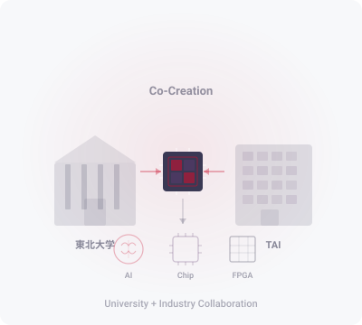

東北大学とTokyo Artisan Intelligence（TAI）社の共創により、
次世代AI向けリコンフィギャラブル半導体チップの研究開発を推進します。
AI技術の急速な進展に伴い、高性能かつ柔軟な半導体チップの需要が高まっています。 Reconfigurable AI-Chip共創研究所は、東北大学とTokyo Artisan Intelligence（TAI）社が連携し、 FPGAをはじめとするリコンフィギャラブルデバイスを活用した次世代AIチップの研究開発を行います。
大学の先端的な研究知見と企業の実装技術を融合させることで、 高効率・低消費電力のAI推論・学習アーキテクチャの実現を目指します。 半導体とAIの交差点から、新たな価値を共創していきます。


FPGAの柔軟な再構成能力を活用し、多様なAIモデルに対応可能な 高効率アクセラレータアーキテクチャの研究開発を行います。 ニューラルネットワークの構造に最適化された回路を動的に生成し、 推論・学習の両面で高いスループットと低消費電力を実現します。

AI処理に特化したカスタムロジック回路の設計手法を研究します。 演算精度と回路面積のトレードオフを最適化し、 エッジからクラウドまで幅広い応用に対応するチップアーキテクチャを探求します。